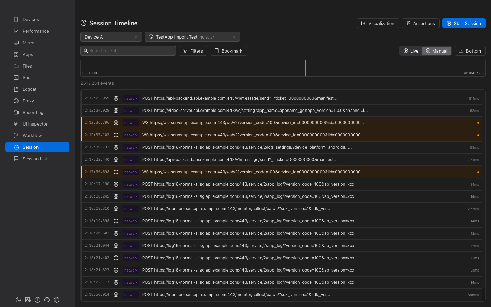
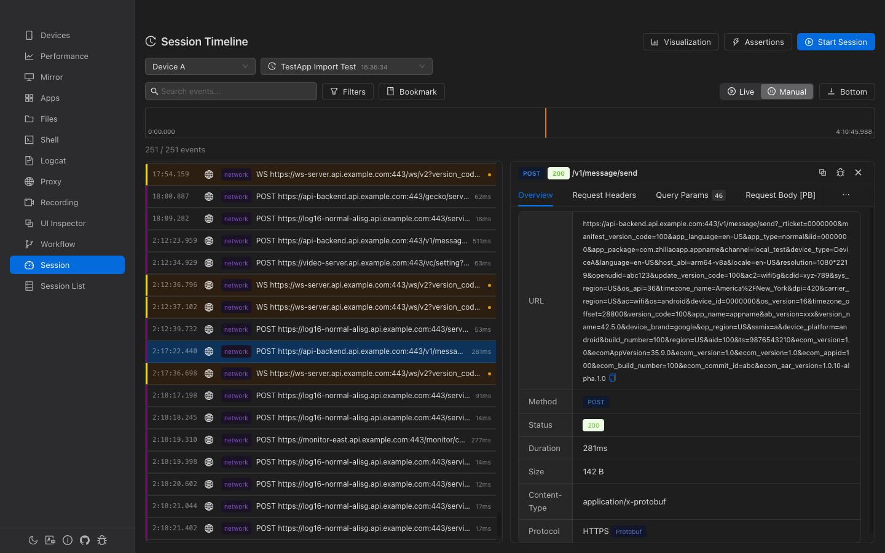

Session & Events
Unified event timeline that combines logcat, network, touch, device state, app lifecycle, and workflow events into a single time-correlated view. Record sessions with video, export and import for sharing.

Overview
Unified Timeline
All device events — logs, network requests, touch inputs, state changes — on one timeline.
Session Recording
Start sessions with logcat, screen recording, network proxy, and device monitoring.
Visual Analytics
Statistics, network waterfall chart, and event lane diagrams for analysis.
Export & Import
Export sessions as .gaze archive files. Import on another machine for review.
Session Management
Sessions are the containers for all device events. Each device can have one active session at a time.
Session List
The session list shows all recorded sessions with statistics dashboard:
- Total sessions, Active sessions, Sessions with video, Total events
- Search by session name, ID, or device ID
- Filter by status: active completed failed cancelled
- Batch selection and deletion
- Per-session actions: End, View Events, Play Recording, Rename, Export, Detail, Delete
Creating a Session
Click Start Session on the Events page to open the configuration modal:
| Module | Settings | Default |
|---|---|---|
| Logcat | Package name, pre-filter, exclude filter | Enabled |
| Screen Recording | Quality: Low / Medium / High | Enabled, Medium |
| Network Proxy | Port, HTTPS MITM toggle | Enabled, port 8080, MITM on |
| Device Monitor | Battery, network, screen, app lifecycle | Enabled |
Event Timeline
Time Ruler
A visual bar at the top showing the full session duration:
- Density bars — Per-second event count (height proportional to count, red for seconds with errors)
- Position indicator — Yellow vertical line showing current position
- Drag-to-select — Click and drag to select a time range for filtering
- Bookmark markers — Colored triangular flags at bookmark positions
- Critical markers — Icons for crashes, ANRs, and errors at the bottom
Event List
Each event row shows:
- Relative time — Offset from session start (e.g., "0:05.381")
- Source tag — Color-coded: logcat network device app touch and more
- Title — Event summary (red for critical events)
- Duration — For timed events (e.g., network requests)
- Level indicator — Colored dot for error/warning levels
Auto-scroll
- Live mode — Auto-scroll to latest events (for active sessions)
- Manual mode — Pause auto-scrolling for manual navigation
- "Bottom" button — Jump to the end of the event list
Filtering Events
Text Search
Full-text search powered by SQLite FTS5. Searches in event titles, summaries, and data content with 300ms debounce.
Filter Checkboxes
Filter by source, category, and level using the filter popover:
- Sources (10) — logcat, network, device, app, ui, touch, workflow, perf, system, assertion
- Categories (6) — log, network, state, interaction, automation, diagnostic
- Levels (6) — verbose, debug, info, warn, error, fatal
Time Range
Drag-select on the Time Ruler to filter events to a specific time window.
Event Detail
Click an event to open the detail panel. The panel adapts based on event type:
General Events
- Metadata: time, source, level, duration
- Interactive JSON tree viewer for the event data
Network Events
Specialized view with tabs for request/response details:
- Overview: URL, method, status, duration, size, content type
- Request/Response headers and body (with JSON formatting)
- Query parameters (if present)
- Quick actions: Mock Request and Create Breakpoint (navigates to Proxy page)
Bookmarks
Mark important moments in the timeline for quick navigation.
- Add Bookmark — Click the bookmark button and enter a label for the current time position
- Navigate — Click any bookmark in the list or on the time ruler to jump to that position
- Types — user, error, milestone, assertion_fail (each with a distinct color)
Visualization Panel
Collapsible analytics panel with three tabs:
Statistics
- Key metrics: Total events, errors (with rate), crashes/ANRs, avg response time
- Source distribution (donut chart)
- Level distribution (bar chart)
- Event density over time (area chart)
Network Waterfall
Chrome DevTools-style waterfall chart showing all network requests with timing bars color-coded by status (green 2xx, blue 3xx, orange 4xx, red 5xx).
Event Lanes
Swim lane diagram grouped by event source. Each lane shows event distribution over time. Click events to view details. Expandable/collapsible lanes with event count tags.
Assertions
Validate session data with built-in and custom assertions:
Quick Assertions
- No Errors — Verify no error/fatal level events exist
- No Crashes — Verify no app_crash events exist
Custom Assertions
| Field | Description |
|---|---|
| Type | exists, not_exists, or count (within range) |
| Event Types | Multi-select from session's actual event types |
| Title Match | Regex pattern for matching event titles |
| Min/Max Count | For count type: expected range |
Export & Import
Export
Export a session as a .gaze archive (ZIP format) containing:
manifest.json— Archive metadatasession.json— Session metadata and configurationevents.jsonl— All events (JSON Lines format)bookmarks.json— User bookmarksrecording.mp4— Screen recording (if exists)
Import
Import a .gaze file on any machine. A new session ID is generated to avoid conflicts. The imported session name has "(imported)" appended.
Event Sources
| Source | Description | Example Events |
|---|---|---|
| logcat | Device logs | logcat, logcat_aggregated |
| network | Network traffic | http_request, websocket_message |
| device | Device state | battery_change, network_change, screen_change |
| app | App lifecycle | app_start, app_stop, app_crash, app_anr |
| touch | Touch input | touch, gesture |
| workflow | Automation | workflow_start, workflow_step_*, workflow_complete |
| perf | Performance | perf_sample |
| system | System events | session_start, session_end, recording_start |
| assertion | Assertions | assertion_result |